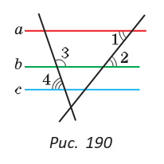
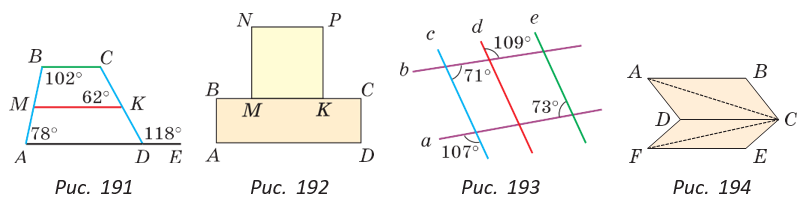

Задания к § 16
|  |
138. На рисунке 190 ∠ 1 = 52°, ∠ 2 = 52°, ∠ 3 = 122°, ∠ 4 = 58°. Докажите, что a || c. |
139. Среди прямых a, b, c и d, лежащих в одной плоскости, определите пары параллельных прямых, если известно, что a ⊥ b, c ⊥ b, a ⊥ d.

140. Выясните, пересекутся ли при продолжении отрезки MK и BC (рис. 191).
141. На рисунке 192 ABCD — прямоугольник, MNPK — квадрат. Докажите, что NP || AD, AB || PK.
142. Определите все пары параллельных прямых (рис. 193).
143. На рисунке 194 ∠ BAC = 28°, ∠ ACD = 28°, ∠ DFC = 35°, ∠ EFC = 15°, ∠ FDC = 130°. Докажите, что AB || FE.
144*. . Если две параллельные прямые пересечь двумя другими перпендикулярными им параллельными прямыми, получим прямоугольник. Сколько всего прямоугольников можно насчитать в прямоугольной таблице, у которой 2 строки и 3 столбца?
|
|